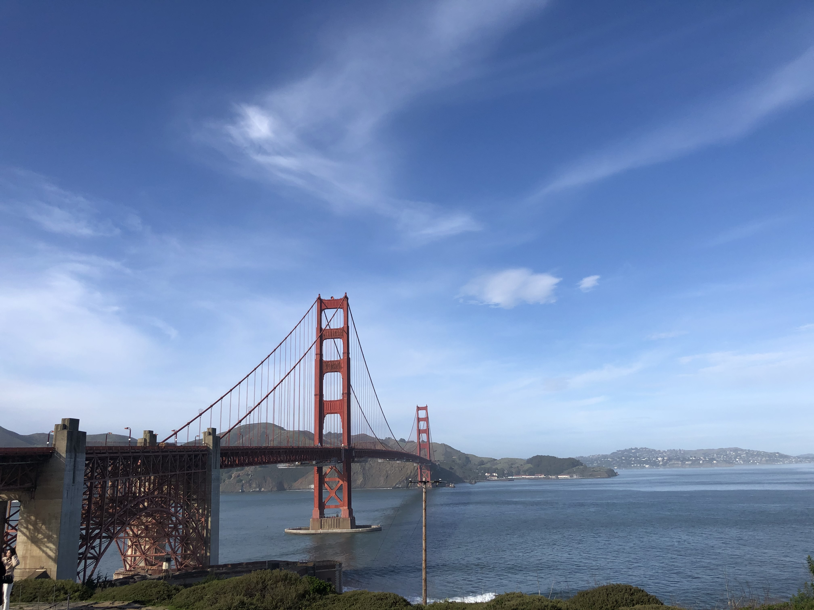
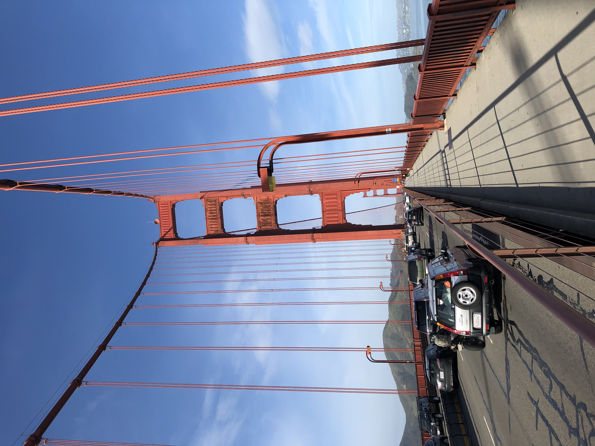
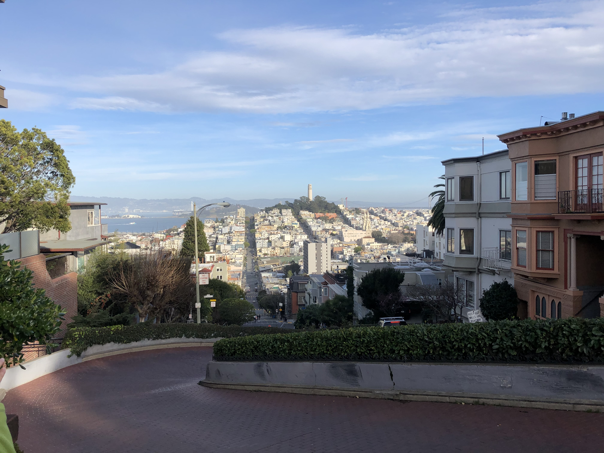
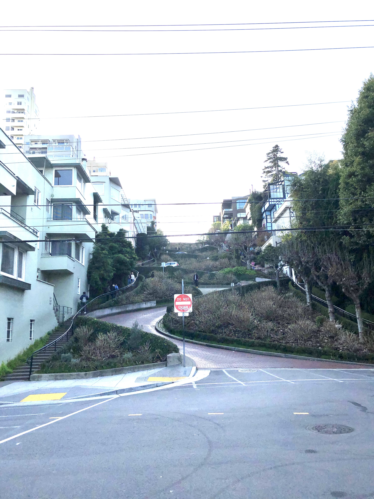
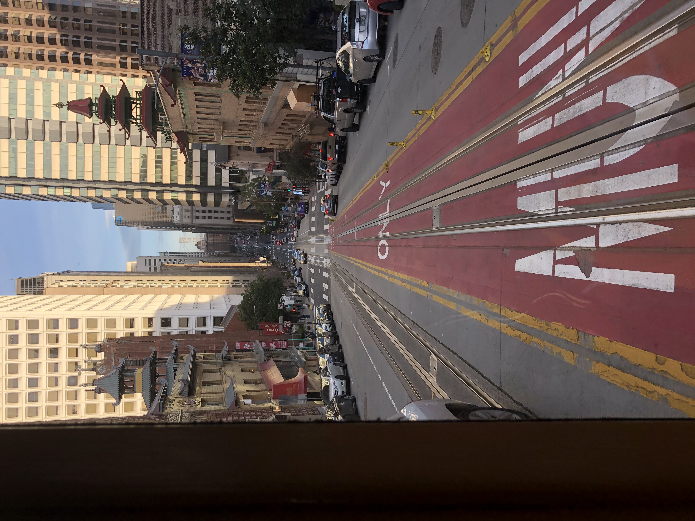
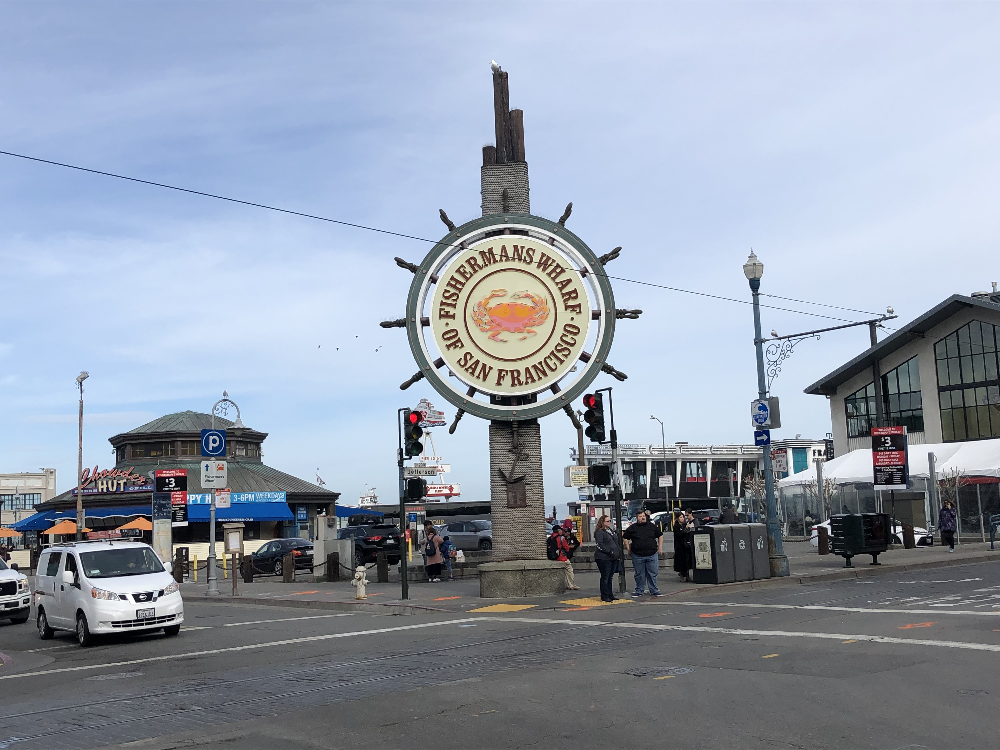
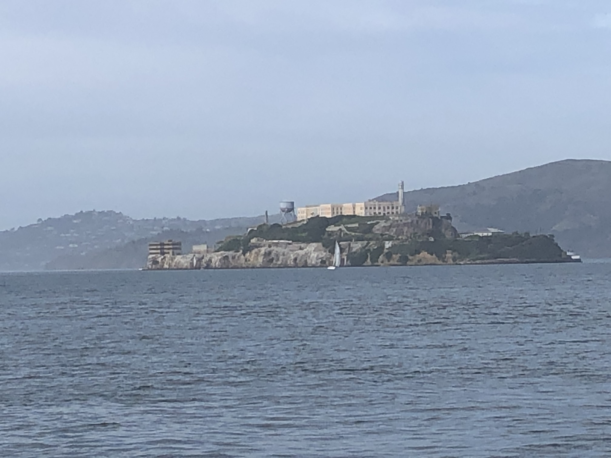
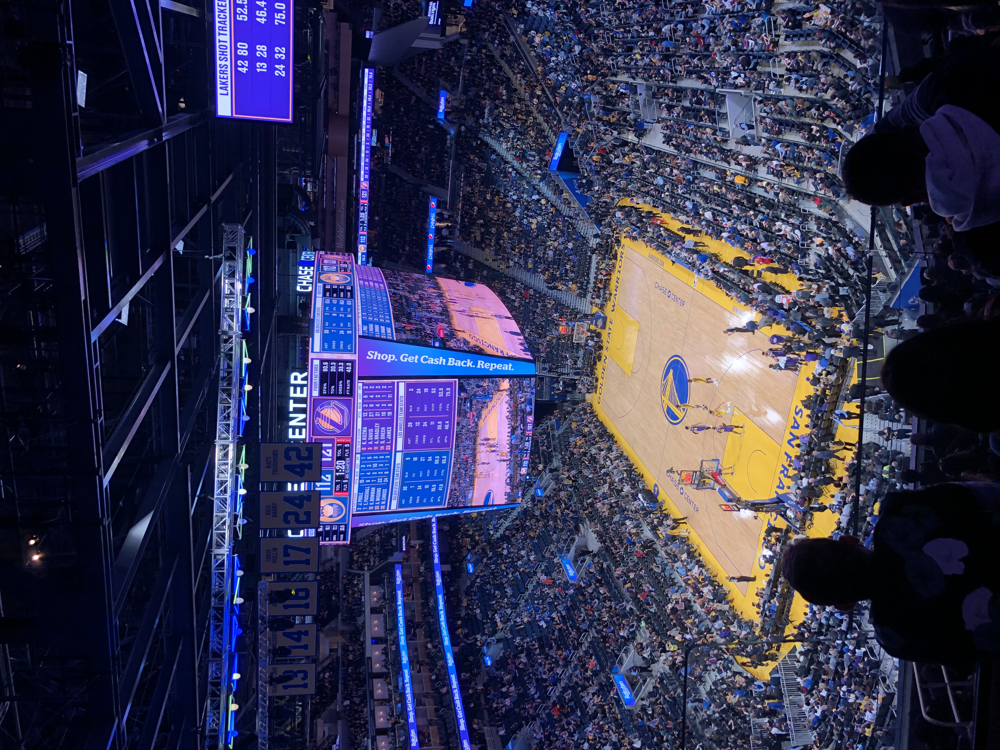

Golden Gate Bridge
舊金山的地標-金門大橋
金門大橋上之景觀，這座橋橫跨連接舊金山灣與太平洋的金門海峽，有著十分重要的運輸功能。
在靠近舊金山的下橋處設有收費站，當車輛要進入灣區時必須繳交通行費。
Lombard Street
|  |  |
Lombard Street，這是一個電影和戲劇中常常出現的場景，街道兩側為住家，若有想測試駕駛技術的可以來試試看。
噹噹車

|
 |
在舊金山市區穿梭的噹噹車，因為有時會發出噹噹的聲音而得名，他需要在特定的軌道上行駛，在搭乘時還可以站在車子最外側的踏階抓著柱子上的把手，會獲得更不一樣的體驗。
Fisherman's Wharf
|  |  |
漁人碼頭也是一個觀光客的聚集地，在那邊可以看到很多人在商家排隊買美食，也有很多人在海邊散步放鬆心情。右圖則是自碼頭遠眺曾經是美國聯邦監獄的惡魔島。
Chase Center
這場NBA賽事是湖人vs勇士，有非常多觀眾前往觀賞。場館十分的大且漂亮，販賣部不僅有美食，還有勇士隊的相關紀念品可以挑選。